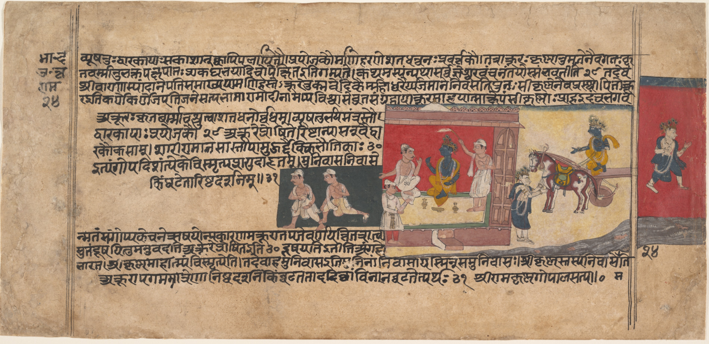

Linked to an episode
A focused piece develops a question raised in a particular Bhagavata Purana episode.
A second strand
Shorter pieces examine other classical Indic texts and ask how their arguments bear on modern problems in psychology, ethics, communication, and technology.

A focused piece develops a question raised in a particular Bhagavata Purana episode.
A single Indic concept is explained within its textual and philosophical setting before any modern application is proposed.
Different schools of Indic thought are compared without treating their disagreements as superficial variations of one view.
This table will index work on the Bhagavad Gita, Yoga Sutras, Nyaya Sutras, and comparative Indic philosophy.
| Video title | Text or school | Topic | Relation to Bhagavata episode | YouTube |
|---|---|---|---|---|
| To be added | To be added | To be added | To be added | To be added |